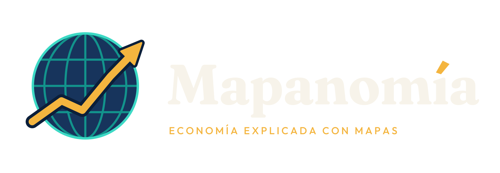

Condiciones de uso
Última actualización: 16 de octubre de 2026
1. El contenido de Mapanomía
Los videos de Mapanomía son educativos: explican geografía, historia y economía con mapas y datos de fuentes verificables, que se citan en cada video. No son asesoría financiera, de inversión, legal ni de ningún otro tipo profesional; explicamos cómo funciona la economía, no qué comprar ni vender.
2. Mapas, datos e inteligencia artificial
Los mapas se elaboran con datos abiertos, como Natural Earth (dominio público) y © colaboradores de OpenStreetMap, y con material de dominio público. La narración y algunas imágenes ilustrativas, como reconstrucciones históricas, se generan con inteligencia artificial; cuando una imagen pueda confundirse con una real, se indica según las reglas de cada plataforma. Mapanomía no imita el rostro ni la voz de personas reales.
3. Mapanomía Publicador
«Mapanomía Publicador» es una herramienta interna que solo publica en las cuentas propias de Mapanomía y consulta sus estadísticas. No ofrece servicios a terceros. Su uso se rige además por las condiciones de cada plataforma (YouTube, TikTok, Instagram y Facebook) y por nuestra política de privacidad.
4. Propiedad
La marca Mapanomía, su logotipo y sus videos pertenecen a Mapanomía. Puedes compartir los enlaces a los videos libremente; para otros usos, escríbenos.